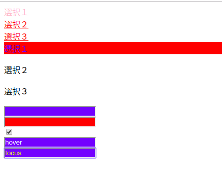

[CSS] その他の疑似選択子 - link, visited, target, enabled, disabled, not, active, hover, focus
こんにちは。明月です。
今回でCSS選択子の整理が全て終わると思います。今日、紹介する選択子の使用頻度はよく使いますが、よく使わない。つまり、ウェブサービスのスタイルよって違いますが、よく使うところには使いますが、使わないところは全然使わない、その選択子です。
<!DOCTYPE>
<html>
<head></head>
<body>
<a href="#one">選択１</a><br />
<a href="#two">選択２</a><br />
<a href="#three">選択３</a><br />
<div id="one">選択１</div><br />
<div id="two">選択２</div><br />
<div id="three">選択３</div><br />
<input type="text"><br />
<input type="text" disabled="disabled"><br />
<input type="checkbox" checked="checked"><br />
<input type="text" value="hover"><br />
<input type="text" value="focus"><br />
</body>
</html>
a:link {
color:red;
}
a:visited {
color:pink;
}
:target {
color:blue;
background-color:red;
}
input:enabled {
background-color:blue;
}
input:disabled {
background-color:red;
}
input:hover {
color:white;
}
input:focus {
color:yellow;
}
上の例をみれば、３つの「a」タグと「div」タグ、そして５つの「input」タグがあります。
先、「a」タグの「link」、「visited」は「link」タグによっては一回もクリックしなかった場合の「a」タグを選択、「visited」は一回以上にクリックした場合の「a」タグを選択することです。
つまり、初めは赤色の「a」タグが３つありますが、「選択１」をクリックしてしまうと「選択１」の「a」タグはピンク色になりますね。
「:target」は「a」タグで「id」によってフォーカスされたものを選択するものです。つまり、ブラウザのアドレスに「#id」名が指しているものが選択されます。
「:enable」と「:disabled」は「input」タグで「diabled」属性が「disabled」か「none」かの選択子です。タグの属性で「enabled="enabled"」とはありませんので、「disabled="disabled"」がなければ、「:enabled」の対象、あれば「:disabled」の対象になります。
「hover」はマウスのイベントによって選択するものです。「hover」は要素でマウスが上にあると選択されます。つまり、テキストボックスの上にマウスを置くとテキストが白色になりますね。
「focus」の場合はテキストボックスの場合、キーボードのカーソルがテキストボックスにあると選択する選択子です。テキストで入力がおわり、他のことを選択するとこの選択子は解除してしまいます。

ここまでCSSの選択子に関してほとんど纏めて説明しました。
CSSの選択子はJavascriptやJqueryでも同じ形式で選択子を使うので「CSS選択子」はウェブで重要な部分だと思います。
- [CSS] ブラウザから開発する方法 (developer mode)2019/12/25 07:54:31
- [CSS] 色スタイル、グラデーション2019/12/24 07:37:22
- [CSS] アニメーション (animation)2019/12/20 20:51:38
- [CSS] トランスフォーム (transform)2019/12/19 13:00:26
- [CSS] トランジション(transition)2019/12/18 20:33:57
- [CSS] Columnスタイル2019/12/17 19:52:56
- [CSS] 整列スタイル (float)2019/12/17 00:08:54
- [CSS] 位置(position),表示(display)スタイル2019/12/13 20:08:50
- [CSS] border(枠)、余白スタイル - border, margin, padding2019/12/12 20:16:43
- [CSS] 文字スタイル2019/12/11 21:13:22
- [CSS] その他の疑似選択子 - link, visited, target, enabled, disabled, not, active, hover, focus2019/12/10 07:31:28
- [CSS] 疑似要素選択子 - fist-line, first-letter, before, after2019/12/09 07:28:27
- [CSS] 範囲と指定に関する選択子(全体選択子、要素選択子、孫選択子、子選択子、隣接選択子)2019/12/06 07:27:36
- [CSS] 疑似クラス - only-child, only-of-type, empty, empty, root2019/12/05 07:29:15
- [CSS] 疑似クラス - first-child, last-child, first-of-type, last-of-type2019/12/04 07:28:37
- [Java] WebSocketでWeb Sessionを使う方法(Broadcast)とウェブチャットの例2020/02/22 03:00:00
- [Java] WebSocket (ウェブソケット)2020/02/21 03:00:00
- [CakePHP] Errorページを設定する方法2020/02/20 03:00:00
- [CakePHP] Transactionを使う方法とEntityクラスを利用してInsert、Update、Deleteする方法2020/02/19 03:00:00
- [CakePHP] ORMのテーブルFetch設定2020/02/18 03:00:00
- [CakePHP] Cakeフレームワークでデータベースに接続する時に使うQuery式とEntityクラス、Tableクラス、ResultSet2020/02/17 08:16:23
- [CakePHP] データベース(MariaDB(Mysql))を接続する方法2020/02/14 03:00:00
- [PHP] namespaceとuse2020/02/13 03:00:00
- [CakePHP] RequestとResponseに関して2020/02/12 03:00:02
- [CakePHP] PHPのCakeからAjax要請がある時、jsonタイプ(json_encode関数)でResponseする方法とControllerでViewを選択する方法2020/02/08 03:00:00
- [CakePHP] MVCフレームワークのCakeをインストールする方法2020/02/07 03:00:02
- [PHP] 自動require及びincludeをする方法(spl_autoload_register)2020/02/05 03:00:00
- [PHP] 匿名関数(ラムダ式)とクロージャ(closure)2020/02/04 03:00:00
- [PHP] PHPのコーディング領域とデザイン領域を分離するテンプレートライブラリ Smarty2020/02/02 03:00:00
- [PHP] Reflection - Variable編2020/02/01 03:00:00